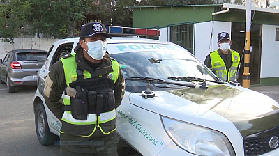

Bolivia ingresará a una cuarentena dinámica desde junio controlada por los subgobiernos
El ministro de Desarrollo Productivo y Economía Plural,
Óscar Ortiz informó este jueves que el gabinete ministerial aprobó varios decretos,
entre ellos el que determina que Bolivia ingresará a una cuarentena dinámica, pero
regida por los gobiernos departamentales y municipales desde junio.
“El gabinete ministerial ha aprobado varios decretos hoy (jueves), especialmente el
que regula la cuarentena de junio, una cuarentena nacional dinámica y condicionada,
en la que se va a permitir reanudar algunas actividades que aún no estaban operando”,
señaló Ortiz.
La autoridad añadió que esta nueva cuarentena “establece mayores niveles de decisión a
los gobiernos municipales y departamentales para que cada uno de ellos, en el marco de
sus centros de operaciones de emergencias municipales y departamentales (COE) puedan definir
y regular (la cuarentena)”. Mientras que la circulación del transporte interdepartamental
dependerá del Gobierno nacional, el transporte interprovincial e intermunicipal de las
gobernaciones y las alcaldías se encargarán del transporte que circula en su jurisdicción.
Ortiz explicó que el Gobierno establece un rango de horario
entre las 05:00 y 18:00 para la circulación, sin embargo, cada departamento y municipio
debe regular los horarios de los distintos sectores que reinicien sus actividades. Dijo
que se busca que sean horarios de media jornada continua para evitar el mayor traslado
posible de gente.
Respecto a las salidas según el último dígito de la cédula de identidad,
el ministro refirió que esa medida ya no está vigente porque ahora se podrá
circular en los horarios mencionados. Finalmente, recordó que el concepto de
la cuarentena dinámica significa que las restricciones en mayor o menor grado
dependerán obviamente de la evaluación epidemiológica.
Policía registra 527 efectivos contagiados con coronavirus en el país
La Policía registra 527 efectivos en todo el país
contagiados por el coronavirus, que se concentran en mayor cantidad en Santa Cruz,
según informó el sábado el viceministro de Seguridad Ciudadana, Wilson Satamaría.
Santa Cruz tiene a 219 efectivos contagiados y 65 sospechosos; La Paz, 97 contagios
y 81 casos con síntomas; Beni, 77; Cochabamba, 71; Chuquisaca, 33; Tarija, 12; Oruro,
11; Potosí, cinco; y Pando, dos.
Asimismo, Santamaría explicó que el incremento de casos positivos en las Fuerzas del Orden produce la disminución del personal en ciertas regiones. “Los protocoles establecen aislamiento de las líneas de contacto que han tenido estos oficiales que han dado positivo, y entretanto cumplan la verificación son sospechosos, y entretanto son sospechosos mantienen aislamiento”, manifestó la autoridad.
Gobierno entrega una tonelada de equipos médicos para los hospitales centinela de Cochabamba
El ministro de Trabajo, Óscar Mercado, entregó el sábado una tonelada
de insumos y equipos de salud en Cochabamba para los hospitales centinela vallunos y así
fortalecer la atención de pacientes con coronavirus en uno de los departamentos más golpeados
del país por la pandemia con 3.233 contagios.
“En nombre y en representación de la presidente Jeanine Áñez, hemos hecho entrega de casi
una tonelada de equipos para los centros Covid (…) se ha entregado una diversidad de insumos
y de equipos para mejorar nuestra capacidad hospitalaria en la contención del coronavirus”,
informó Mercado.
Entre los equipos que se entregaron, la autoridad mencionó que se entregaron desde monitores
para terapia intensiva, válvulas de infusión, camas de tres movimientos, colchones, pedestales
para sueros, entre otros. También se entregaron reactivos para realizar pruebas de coronavirus.